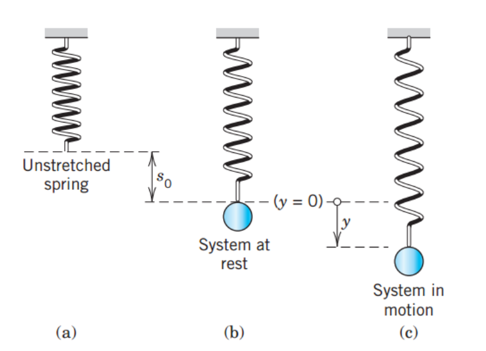

[Engineering Mathematics] Ch 2. 2st-order ODE - part 2
이제 2nd Order-Homogeneous LInear ODE를 풀어봅시다.
![[Engineering Mathematics] Ch 2. 2st-order ODE - part 2](./images/img-001.png)
기억 나시나요? 1차 ODE에서 해는 e^x 지수함수 형태였습니다. 그 이유는 미분해도 같은 함수 형태이기 때문에
그래서 다음과 같이 y를 가정하고 대입하면,
![[Engineering Mathematics] Ch 2. 2st-order ODE - part 2](./images/img-002.png)
지수의 lambda의 2차 방정식이 derived.
이 말은??? 판별식으로 lambda 도출 가능.
![[Engineering Mathematics] Ch 2. 2st-order ODE - part 2](./images/img-003.png)
However, 중학교때 배웠듯이, 실근,중근 허근인 경우로 나누어야 겠죠? 그때마다 lambda의 형태가 다를테니까.
![[Engineering Mathematics] Ch 2. 2st-order ODE - part 2](./images/img-004.png)
1. 실근일 경우.
simple합니다. 그냥 위에 판별식에서 나온 lambda1,2를 그대로 가져오면 되죠.
따라서, 두개의 solution의 합인 General Solution의 형태라는 것.
![[Engineering Mathematics] Ch 2. 2st-order ODE - part 2](./images/img-005.png)
2. 중근일 경우.
일단, 다음과 같이 근이 한개만 나옵니다. 그니까 y1만 나온다는 말이죠.
![[Engineering Mathematics] Ch 2. 2st-order ODE - part 2](./images/img-006.png)
그런데!!!!!!!!!!!!! 위에서 제가 열심히 설명했죠. 2nd order ODE의 Genearl solution은
두개의 y1,y2의 합으로 표현 되어야만 한다고 must입니다. 필수에요 이유는 inital condition을 만족해야만 하기 때문
여기서 Reduction of order 에서의 방법을 사용합니다.
y2 = u(x) y1 이라고 정의하고 원래 식에 대입.
![[Engineering Mathematics] Ch 2. 2st-order ODE - part 2](./images/img-007.png)
![[Engineering Mathematics] Ch 2. 2st-order ODE - part 2](./images/img-008.png)
마지막 항은 0 인거 보이시나요???
그런데 두번째 항도 0 입니다. why?
![[Engineering Mathematics] Ch 2. 2st-order ODE - part 2](./images/img-009.png)
결론적으로, u'' = 0 그니까 적분하면 u(x) = C x (C는 상수)
그런데, u(x)는 우리가 그냥 만족하도록 임의로 설정하는 함수니까 그냥 C = 1 이라고 마음대로 설정해도됨.
u(x) = x, y2 = u(x) y1 = x y1 따라서, y1,y2는 각각
![[Engineering Mathematics] Ch 2. 2st-order ODE - part 2](./images/img-010.png)
Genearl Solution은
![[Engineering Mathematics] Ch 2. 2st-order ODE - part 2](./images/img-011.png)
3. 허근일 경 우.
여기서, w를 다음과 같이 정의하자,
![[Engineering Mathematics] Ch 2. 2st-order ODE - part 2](./images/img-012.png)
결국, Lambda 는
![[Engineering Mathematics] Ch 2. 2st-order ODE - part 2](./images/img-013.png)
그리고 두해는
![[Engineering Mathematics] Ch 2. 2st-order ODE - part 2](./images/img-014.png)
여기서 아주 중요한 Euler Formula를 사용하자(추후에 증명)
![[Engineering Mathematics] Ch 2. 2st-order ODE - part 2](./images/img-015.png)
따라서, 최종해는 다음과 같이 삼각함수로 표현 할 수 있다.
![[Engineering Mathematics] Ch 2. 2st-order ODE - part 2](./images/img-016.png)
Superposition Principle(해 = 다른해1 + 다른해2)을 이용해서 두해를 조금 단순하게 표현해보자.
그리고 Linearity principle을 이용해서 마음대로 상수를 곱하도 나누어도 해 도출 가능.
위 두식을 더하고 2로 나누면. 첫번째 해,
위 두식을 빼고 1/(2i)로 나누면, 두번째 해
![[Engineering Mathematics] Ch 2. 2st-order ODE - part 2](./images/img-017.png)
결국 Genearl Soltuion은 다음과 같이 표현된다.
![[Engineering Mathematics] Ch 2. 2st-order ODE - part 2](./images/img-018.png)
지금까지 2nd order homogeneous Linear ODE에서 3가지 경우로 나누어서 해를 구해보았고 종합해보면 다음과 같다.
![[Engineering Mathematics] Ch 2. 2st-order ODE - part 2](./images/img-019.png)
이제 실제 상황에 적용해봅시다.
mass-spring system

자 밑의 방향을 +로하는 y는 원점으로부터 변위를 뜻합니다.
그렇다면 공의 가속도 a= y'' 으로 표현 가능하겠죠? (가속도의 정의)
따라서 중력을 무시하면 탄성력만 작용하므로, 훅's law를 이용하면
![[Engineering Mathematics] Ch 2. 2st-order ODE - part 2](./images/img-021.png)
알짜힘 F1 = ma 를통해, 밑의 2nd Order Homogeneous linear ODE가 도출됩니다.
![[Engineering Mathematics] Ch 2. 2st-order ODE - part 2](./images/img-022.png)
( b^2-4ac = -4km <0), 즉 허근인 경우이므로,
해는 결국 다음과 같이 표현 할 수 있습니다.
![[Engineering Mathematics] Ch 2. 2st-order ODE - part 2](./images/img-023.png)
삼각 함수의 합성을 사용해주면
![[Engineering Mathematics] Ch 2. 2st-order ODE - part 2](./images/img-024.png)
Initial condition 에 따라서, y(t) 의 그래프는 다음과 같습니다.
![[Engineering Mathematics] Ch 2. 2st-order ODE - part 2](./images/img-025.png)
하지만, 위의 경우는 Damping을 무시한 경우 이고 실제로는 Damping이 존재.
![[Engineering Mathematics] Ch 2. 2st-order ODE - part 2](./images/img-026.png)
Damping term을 방정식에 넣어주면 (Damping force = c v = c y'), C는 상수, v는 속도
![[Engineering Mathematics] Ch 2. 2st-order ODE - part 2](./images/img-027.png)
위 2nd order ODE 를 우리가 위에서 배운 내용대로 해를 구해주면
![[Engineering Mathematics] Ch 2. 2st-order ODE - part 2](./images/img-028.png)
![[Engineering Mathematics] Ch 2. 2st-order ODE - part 2](./images/img-029.png)
이렇게 두개의 해가 존재합니다.
따라서, Damping 이 있는 경우에는 실근,중근,허근이 상수에 따라서 모두 가능하다는 것!
![[Engineering Mathematics] Ch 2. 2st-order ODE - part 2](./images/img-030.png)
1. Overdamping (실근)
실근인 경우는 가장 easy하게 그냥 근의 공식의 해 그대로 두개의 해가 derived.
![[Engineering Mathematics] Ch 2. 2st-order ODE - part 2](./images/img-031.png)
Initial condition에 따라서, 그래프를 그려주면
![[Engineering Mathematics] Ch 2. 2st-order ODE - part 2](./images/img-032.png)
즉 모두 t가 증가할수록 0 에 가까워지는 것을 확인 할 수 있다.
2. Critical damping (중근)
위의 해에서, c^2-4mk = 0이고, Beta = 0 이므로, 하나의 해 e^(-
αt) 만 존재하지만,
위에서 배웠다 싶이, Reduction of order 을 통해서 , y2 = t e^(- α t) 도 존재함을 배웠죠??
따라서,
![[Engineering Mathematics] Ch 2. 2st-order ODE - part 2](./images/img-033.png)
![[Engineering Mathematics] Ch 2. 2st-order ODE - part 2](./images/img-034.png)
똑같이, t가 증가함에 따라서 0에 가까워집니다.
이제 마지막으로,
3. Underdamping (허근)
근은 다음과 같이 i를 이용해서 표현 가능
![[Engineering Mathematics] Ch 2. 2st-order ODE - part 2](./images/img-035.png)
![[Engineering Mathematics] Ch 2. 2st-order ODE - part 2](./images/img-036.png)
α=c/2m이고, Euler's formula사용하면,
![[Engineering Mathematics] Ch 2. 2st-order ODE - part 2](./images/img-037.png)
그래프로 표현해주면,
![[Engineering Mathematics] Ch 2. 2st-order ODE - part 2](./images/img-038.png)